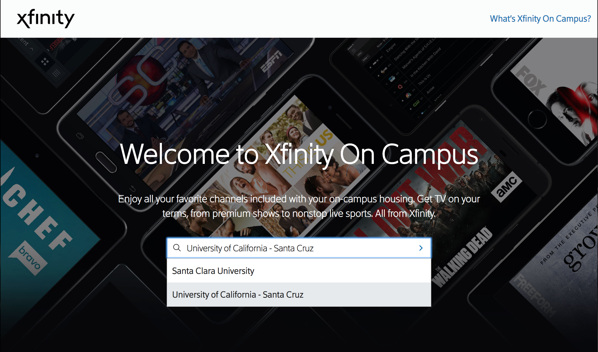
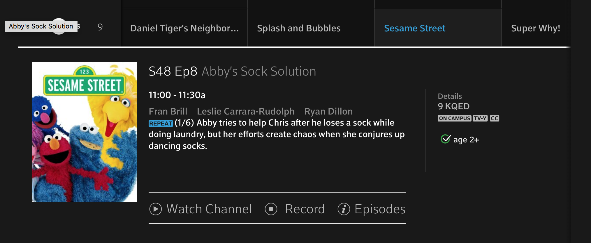

____________________________________________________________________________________________________________________________________________________________________________
Using Xfinity On Campus:
How to Use Internet
To Access Television
____________________________________________________________________________________________________________________________________________________________________________
ResNet
831-459-4638
10AM - 12PM, 1PM - 5PM, Monday - Friday
Rachel Carson College (formerly College 8)
You can connect to Xfinity On Campus with a computer or other device that talks to the internet. From here you may stream on demand, save shows, and watch live TV.
While some televisions may be receiving a functioning cable connection via a coaxial connection,
the full features described will not be experienced unless one is connected to an internet
connection.
How to Connect
In order to connect to Xfinity On Campus you must be connected to one of the campus
networks. This includes: UCSC-Guest, Eduroam, ResWiFi, or through a wired Ethernet
connection.
Logging into Xfinity On Campus

Channels is a useful interface that shows the current channel lineup. This is useful for your television if you are not using a computer to watch and would like to know the channel guide. An important distinction to make is that if you are using a coaxial connection for television, you may not receive all the channels listed in the channel section. If you would like to view the subset of channels not going through the coax connection, you may use a computer and stream it to your TV either via connecting through a cable (hdmi, vga + audio etc) or through a streaming device such as a Chromecast.
When a desired channel or show is found, upon selecting Watch Now you will be directed to the same URL as if you had selected Watch Now on the Xfinity stream page.
Watch Now allows you stream from available programs, watch live TV, and record television programs. To reiterate, this page will not work in a private browsing window and you must have flash enabled.
